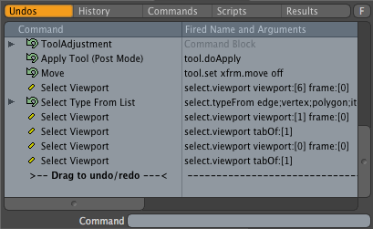
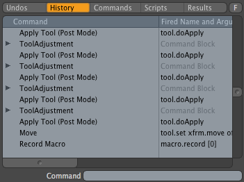
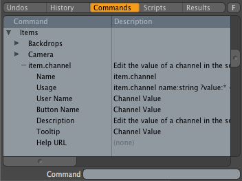
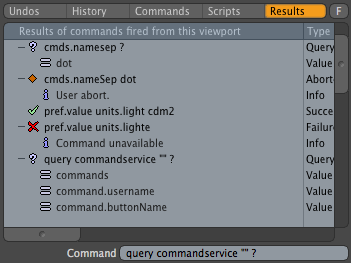

Command History Viewport¶
The Command History Viewport]] viewport tracks command executions, making it an essential development tool. This viewport also contains the undo stack, a complete command list, a simple scripting interface, and the results of any queries performed from the [[Command History Viewport#Command Entry at the bottom of the viewport.
Command Entry¶
In the default layout the Command History viewport is very short, showing only a single line. This is the Command History Viewport#Command Entry, an edit field where commands can be executed directly. Try this out by typing cmds.saveList into the edit field and press return. This opens a file dialog asking where to save the command list, and then writes a complete list of all commands sorted alphabetically to that file. The executed command will then show up in the history and the undo list. Open that file up in your favorite text editor to see a complete list of all commands available in modo.
Clicking on any command or script in the Command History Viewport’s lists will insert it into the Command Entry, ready for editing and execution.
Tabs¶
The Command History Viewport contains five tabs: Undo List, History, Command list, Scripts and Results.
Undo List and History¶
The Undo List and History tabs of the Command History viewport are related, in that both show the commands executed in modo either by the user or by scripts. The difference is in how they represent the effects of undos and redos.
Undo List¶
The first tab of the Command History shows the ./. This shows all executed commands as they are performed, taking into account the effects of undos and redos. You can use this to see what commands are being triggered by your actions. Double-clicking a command will execute it.
Commands that have themselves executed commands (known as sub-commands) will have a small arrow to their left, which can be clicked to see the sub-commands within. By default, the Command History only shows the first ten or so commands to reduce the need to store the hundreds or thousands of commands that large scripts can execute. This can be adjusted via the {{Link to modo docs|pages/modointerface/Pref_Data.html|Max Sub-Commands Recorded}} option in the {{Link to modo docs|pages/modointerface/Pref_Data.html|Preferences}}.
The icons indicate if the command is undoable, redoable, a UI command or a Side Effect command the Command System#Command Classes article for information on what the difference is between them.
History¶
The Command History Viewport#History tab shows a running history of all commands. This ignores the effects of undos, and lists all commands that have been executed. While the Undo List is a snapshot of the minimum number of steps that got the application to its current state, the History is a complete list of all the steps, including mistakes that were undone. As with the Undo List, double-clicking a command will execute it. The History tab also shows quiet commands and other commands that might not normally be visible in the undo list.
 Command List¶
The third tab is the Command History Viewport#Command List. This contains a complete list of every command in modo, sorted into categories. If you need help on a particular command, you can get information on it’s usage here. You can also execute commands by double-clicking them.
Scripts¶
The Command History Viewport#Scripts tab is a somewhat primitive list whose main purpose is to show and edit config macros (macros that are stored in config files, as opposed to as separate files on disk). Only macros stored in the user config are editable; those stored in imported configs will be shown with a lock icon.
Although the other scripting languages are shown here, they cannot be directly manipulated from this tab.
Results¶
The final tab is Command History Viewport#Results, which shows the results of any command executed or queried from this viewport, either through the command entry or by double-clicking on a command in the various lists. Commands are logged for success, failure and queries. This is a good place to tinker with commands without having to write a full script.
Filtering¶
The F button to the right of the tabs toggles the filtering field specific to each tab, allowing you to easily search for a command or command attribute. This is particularly useful in the Command List tab. Turning off the F button also turns off filtering for that tab.
More Information¶
modo Documentation for the {{Link to modo docs|pages/modointerface/viewports/CommandHistory.html|Command History Viewport}}